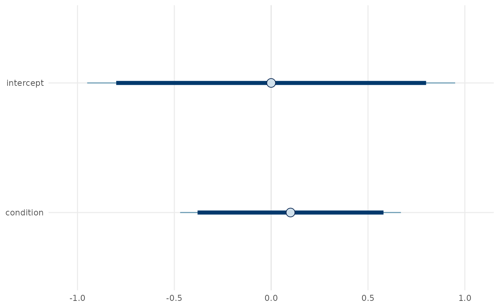
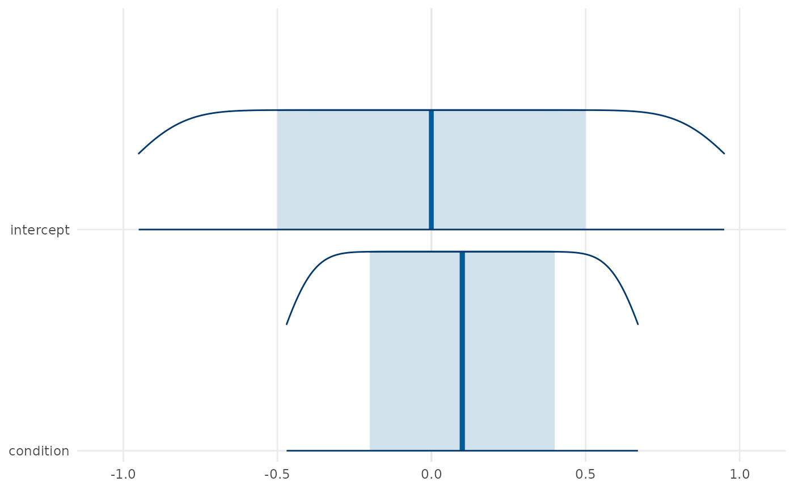

Posterior Exploration and Publication Graphics
Source:vignettes/posterior-exploration-and-graphics.Rmd
posterior-exploration-and-graphics.Rmdgp3bayes separates numerical posterior summaries from
graphics. The same posterior draw matrix can therefore be inspected,
tabulated, and plotted without changing the fitted model or its
contract.
Backend-independent posterior tables
library(gp3bayes)
draws <- cbind(
intercept = seq(-1, 1, length.out = 500),
condition = seq(-0.5, 0.7, length.out = 500)
)
posterior_interval_table(draws)
#> variable mean sd lower median upper
#> 1 intercept -8.104628e-17 0.5790855 -0.95 -1.110223e-16 0.95
#> 2 condition 1.000000e-01 0.3474513 -0.47 1.000000e-01 0.67
posterior_probability_table(draws, rope = c(-0.1, 0.1))
#> variable probability_gt_zero probability_lt_zero probability_in_rope
#> intercept intercept 0.500 0.500 0.100
#> condition condition 0.584 0.416 0.166
#> rope_lower rope_upper
#> intercept -0.1 0.1
#> condition -0.1 0.1
posterior_correlation_table(draws)
#> variable_1 variable_2 correlation method
#> 1 condition intercept 1 pearsonPublication graphics
plot_posterior_intervals(draws)
plot_posterior_areas(draws)
The plotting functions return ordinary plotting objects. They do not alter posterior draws, set decision thresholds, or turn interval exclusion into an automatic substantive conclusion.
Fitted-model extraction
For an approved fitted model, the post-fit API standardises
extraction through the posterior package:
draw_array <- extract_posterior_draws(fit, regex = "^b_", format = "array")
draw_df <- extract_posterior_draws(fit, regex = "^b_", format = "df")
mcmc_diagnostic_table(fit)
sampler_diagnostic_table(fit)
quality <- summarise_mcmc_quality(fit)
plot_rank_diagnostics(fit)
plot_autocorrelation(fit)
plot_mcmc_quality(quality)
plot_sampler_diagnostics(fit)Diagnostic flags request inspection. Their absence is not encoded as proof of model adequacy.